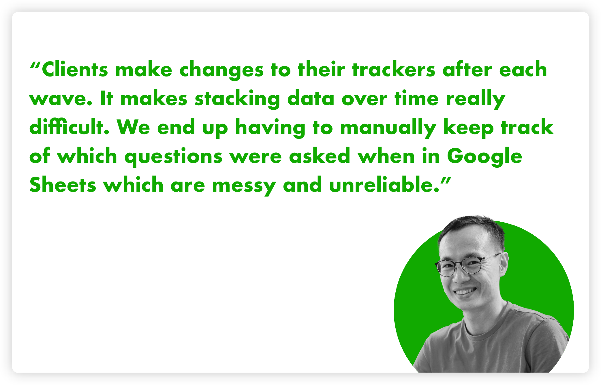
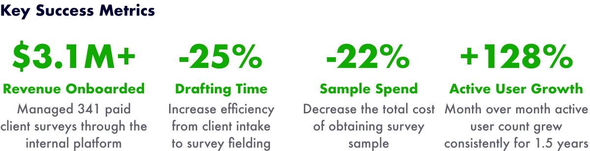

Easybake: A Survey Builder
I researched, designed, and shipped a brand new survey builder product for Morning Consult with a team of 3 PMs and 20+ developers over the course of 6 months.
TLDR:Morning Consult, a survey research and polling company, wanted to bring survey fielding in-house. As the design owner, I was responsible for research, user experience, and execution.
- Role: Lead Product Designer
- Software Used: Figma, UserTesting, Amplitude, Miro, Jira
- Sucessfully shipped MVP
Business objectives
Morning Consult's primary motive is to provide businesses with the real-time data insights they need to make good decisions. They accomplish this by polling thousands of respondents daily to create rich analyses customized to each client's specific business objective.
Historically, fielding surveys at Morning Consult has been an unstandardized, highly manual, and time consuming process that spread across multiple divisions. In order to scale the business and service more clients, the product division aimed to create a survey building and fielding product that could improve this process.
1
Improve internal efficiency
Marginal revenue on trackers is low because they are difficult and time consuming to service.
2
Reduce dependency on Qualtrics
The business is wholly reliant on using Qualtrics as a vendor. This creates risks and limitations.
3
Standardize survey methodology
The format of data input is inconsistent across the business which limits deliverable automation.
I worked with my product manager to create a comprehensive overview of the "why" driving our product portfolio's goals. I gathered insights from the commercial division, my technical partners, the research science team, the data scientists, and the chief leadership team to make sure that the finished product would encompass all stakeholder objectives.
These goals translated into key success metrics for our team and were important to understanding and cutting scope. Once our portfolio charter was finalized, it was shared with stakeholders and presented to our scrum teams. Seeing the direct connection between business goals and technical releases was a fantastic motivator and alignment tool.
User Research
I performed 20+ discovery interviews with users to identify their current process, major pain points, and critical feature needs. This research provided context to how business objectives intersect with actual user experience.
Interacting with Qualtrics is a nightmare and impossibly time consuming
Because Morning Consult works with external clients, they use Word Docs to gather feedback on their surveys. Transcribing, or uploading, a Word Doc to Qualtrics is by far the largest pain point among users.
Survey writing is decentralized and repetitive
Though all trackers are customizable, most clients tend to ask very similar questions on their surveys. Because there is no easy way for users to find previously asked questions, they end up starting each survey from scratch.
Inefficient permission structure creates process bottlenecks
Our client services team does not have the credentials to make QA updates within Qualtrics. This steals valuable time away from the data science team, and creates unnecessary communication back-and-forth.

Survey customization creates methodology and tracking challenges
Tracker surveys at Morning Consult are not standardized across the business. This results in highly flexible, custom trackers that can change over time. These constant changes are risky to data integrity and methodology.
Problem Statements
I translated the user research findings into problem statements. Through a series of brainstorming activities, the whole scrum team came together to come up with potential solutions for each problem statement.
The problem statement framework is especially helpful when tackling a product with nebulous scope. Based on our business objectives, my team knew we would need to build a survey-fielding tool. However, we were less clear on exactly which features would need to be included in the MVP in order for the product to satisfy user problems.
From user research, we generated 10 problem statements that each received dedicated, cross-functional solution brainstorming. I was able to draw a connecting line between user research and the solutions we were building. This made getting resourcing and leadership approval much easier, and discouraged teammates from proposing solutions based on assumptions.
In follow-up feedback sessions, I asked users to review our team's proposed solutions and to rank them in order of highest to lowest impact. This exercise helped validate and prioritize solutions so that when it was time to settle on MVP requirements, we felt confident in the preliminary feature set.
User Flows
First, I created a proposed user flow that encompassed all of the potential solutions our product team could build. Then, I worked with my PM and engineering lead to pare the user flow down to only the most important features that we could ship in 6 months.
North Star Flow
I used the "North Star" user flow as a framing device when pitching the long-term vision of the product to leadership and stakeholders. It included the full gamut of solutions my team had brainstormed. It was incredibly useful in building consensus and getting early feedback before scoping and technical estimation began.
The flow began exclusively as text boxes, but as I presented the flow to leadership teams, I realized that the text was not conveying the full possibilities of the product, and was often creating more confusion than clarification. I decided to replace some text boxes with wireframes and ~voilà~, suddenly the vision snapped into place.
Users can upload Word Docs and resolve parsing errors within the product
Users can start a tracker from a list of preset templates
Users can start a tracker by duplicating an existing survey
Users can perform 100% of survey programming tasks within in-house product
Users can define an audience profile they want to target for responses
Clients can provide survey feedback within the in-house product
Users can automatically apply weighting profiles to data export files
Users can archive and restore questions and answers to preserve data trend-ability
Users are guided through the survey programming process with helpful tips, notifications, and alerts
MVP Flow
After receiving feedback and getting buy-in for the long-term vision, it was time to break the work into manageable releases. In collaboration with my PM and engineering team, we adjusted the North Star user flow to only include the features that we felt were reasonably accomplishable in a 6 month timeframe.
Because this product literally didn't exist yet, it was important that the sliver of features we chose for MVP covered each step of the full end-to-end user experience. This allowed us to onboard beta users at the end of the 6 month mark and begin validating the flow. Even though the MVP experience was far less flashy than the North Star, we would be able to prove that it worked from start to finish, and to point to the additional features planned for post-MVP.
Users can upload Word Docs and resolve parsing errors within the product
The parser allows for more cases which slightly reduces the friction in uploading a Word Doc
Users can start a tracker from a list of preset templates
De-prioritized: tech lift too high for 2022 release
Users can start a tracker by duplicating an existing survey
Users can automatically duplicate the next wave of a tracker
Users can perform 100% of survey programming tasks within in-house product
Users can perform 80% of survey programming tasks within in-house product
Users can define an audience profile they want to target for responses
Clients can provide survey feedback within the in-house product
De-prioritized: users are nervous about client push-back and want more time to plan
Users can automatically apply weighting profiles to data export files
Users can automatically download unweighted data
Users can archive and restore questions and answers to preserve data trend-ability
Users are guided through the survey programming process with helpful tips, notifications, and alerts
Users are prevented from making catastrophic mistakes
Milestone Releases
Working within the Scrum/Agile environment, I designed a modular UI and an iterative release plan that delivered user value every 2 weeks.
As we began this project, we found that there was a lack of trust between stakeholders and our development team. Stakeholders were skeptical that this initiative would be delivered on time, and would include relevant, promised features.
To gain their trust, we prioritized our backlog to ensure a visible change would be released every 2 weeks. This meant that there was a continuous need for mockups that accomplished a small release goal without compromising the larger vision, or creating unnecessary tech debt.
MVP Release
We onboarded the first client tracker in July 2022. So far, we have enabled our client services team to spend 50% less time on the QA and documentation associated with this tracker than before productization.
1
Archive & Restore
Archiving allows client services to "pause" a question or answer on a current wave, and to bring back the question or answer when it is relevant again. This is useful for clients who like to track seasonal trends for a few waves in addition to their standard tracker.
This feature also enables Morning Consult's data lake to accurately and reliably stack data wave-over-wave. The product enforces unique IDs on all questions and answers, and archiving prevents users from accidentally using taken IDs on new questions.
2
Track Changes & Change Log
Because clients frequently make changes to their trackers, client services needed a way to keep track of what changes were made when. When a new wave is published, the product checks for differences between the current wave and the previous wave and asks the user to annotate why a change is taking place.
The product then stores this information in a change log. This means that users no longer need to manually maintain a change log in Excel, and keeps an accurate, centralized record of change rationale. This makes communicating with clients, and holding them accountable for methodology issues, much easier.
3
Field & Export
Prior to Morning Consult's in-house product, there were upwards of 5 different portals for fielding a survey to real respondents. Users would need to configure target audience profiles separately for each of these providers, and manually launch the surveys into field.
Now, fielding profiles are configured agnostically to automatically communicate with the various fielding platforms on behalf of the user. In addition, the product makes data available in real-time as responses roll in. Client services users are able to pull this data independently of their data scientists which eliminates an annoying and menial processing step.
Post launch usability test
I asked users to complete an unmoderated usability test on the live product to assess the usability, copy, and architecture of the MVP release. I translated the findings into tickets organized by prevalance and severity.
In my initial user research, I uncovered that the majority of users had very little survey programming experience. Because of this, our North Star user flow included a number of features aimed at educating and guiding the user as they programmed their survey. These features were deprioritized from the MVP due to timing and technical lift.
Once the MVP was released, it was my number one priority to validate that users were still able to complete their tasks without the assistance of educational helpers. I found that the product was still largely usable, but would benefit from some low-lift updates to copy, explainer text, and product training.
All "basic" survey programming (adding a question, adding an answer, changing question text) was successful
Some question types were less clear than others and required additional headers
The overarching architecture of the product was understandable and easy to navigate
The "complex" survey programming logic (piped text, display logic) was difficult for new users to understand conceptually
Users wanted and expected more shortcuts for performing repetitive tasks
Key Learnings & Next Steps
Post-MVP features are in full swing with templated questions, easier onboarding, full weighting capabilities, and automated QA. The MVP proof-of-concept has increased resourcing for the project, making it a primary initiative for the business

Now that the MVP is launched, the team is turning to more traditional markers for success including number of clients onboarded, efficiency (measured in labor costs & time), and data system independence and integrity.
Next steps include:
1
Rolling out a system for automatically weighting a data set by the U.S. census general population schema
2
Researching, designing, and developing preconfigured templates connected to automated data visualization outputs
3
Expanding to international markets and supporting translation services in order to reach non-English speakers
Next Case Study 
Design System for Capterra
D&D Character Creation App
Developed with Love by Amelia Peacock 2022